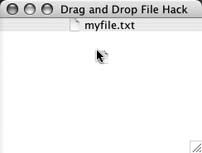

Hack 65. Drag-and-Drop with Files

Drag files from your application directly to the desktop, complete with translucent icons.
This hack shows you how to go much further than mere
clipboard access by digging into the lower levels of the Drag and Drop
APIs and building a program that can save files directly to the desktop
via dragging, complete with proper file icons and drag feedback.
When you use an editor to write a large document, you often save it to a particular location on your filesystem—in a Projects
folder perhaps. This is because you will keep the file around for a
long time, so you want to store it for later use. Small documents,
however, are often created for transient reasons. I often write a few
paragraphs and then immediately post it to a weblog or attach it to an
email. Some applications (particularly those on Mac OS X) let you save
something quickly by dragging a small marker into another application
or the desktop. The marker represents the file and lets you quickly
move the entire file into another context (a blog editor, for example)
without thinking about where to save the file (and trying to remember
where you stashed it 10 minutes later).
Since drag-to-save behavior is not a standard part
of the Java platform, you will have to build it from scratch using the
Drag and Drop APIs. First, you will need a class that can trigger the
drop action. The plan is to detect the gesture, create a temp file to
be saved, and then start the real drag with the appropriate cursor and
user feedback. Here's a starting point:
class FileDragGestureListener extends DragSourceAdapter
implements DragGestureListener {
JTextArea text;
Cursor cursor;
public FileDragGestureListener(JTextArea text) {
this.text = text;
}
The FileDragGestureListener implements DragGestureListener and extends the DragSourceAdapter. Swing sends all drag events to a DragSource listener.
 |
Extending the DragSourceAdapter, instead of implementing DragSource directly, lets your class avoid implementing all of the required methods. DragSourceAdapter gives you empty, no-op implementations of all the methods in DragSource.
|
|
FileDragGestureListener accepts a component to grab the text from. Any provider of text would work, but I chose a JTextArea because it's the most likely to be used in a text editor.
All operating systems define a drag gesture,
which usually means something like "click and drag for more than 10
pixels," though it varies from platform to platform. Swing will detect
the drag gesture and send an event to a DragGestureListener, which is why FileDragGestureListener also implements that interface. DragGestureListener defines one method: dragGestureRecognized( ). This is where the real work of this hack is done:
public void dragGestureRecognized(DragGestureEvent evt) {
try {
// generate the temp file
File proxy_temp = File.createTempFile("tempdir",".dir",null);
File temp = new File(proxy_temp.getParent( ),"myfile.txt");
FileOutputStream out = new FileOutputStream(temp);
out.write(text.getText( ).getBytes( ));
out.close( );
The implementation of dragGestureRecognized( ) starts by creating a temp file to store the text. Actually, first it creates a fake temp file, proxy_temp, using the File.createTempFile( ) method. Then it creates the real temp file in the same directory and writes the text data to the file. You could skip the proxy_temp part, but then if the user drags to the desktop, he will end up with a filename like myfile158392.txt instead of myfile.txt. Using the proxy file lets you create a file with a useful name, while still keeping the file in the default temp directory.
Now that the file is done, it's time to create an icon:
// get the right icon
FileSystemView fsv = FileSystemView.getFileSystemView( );
Icon icn = fsv.getSystemIcon(temp);
Toolkit tk = Toolkit.getDefaultToolkit( );
Dimension dim = tk.getBestCursorSize(
icn.getIconWidth( ),icn.getIconHeight( ));
BufferedImage buff = new BufferedImage(dim.width,dim.height,
BufferedImage.TYPE_INT_ARGB);
icn.paintIcon(text,buff.getGraphics( ),0,0);
In most operating systems, each type of file has a
different icon, such as a little piece of paper for a text file or
musical notes for MP3 files. You could bundle such icons with your
program, but then they wouldn't look right on all operating systems. FileSystemView provides a platform-independent way to get the appropriate icon for any file type with the getSystemIcon( ) method.
Once you have the icon, you just need the underlying image. You could cast the icon to an ImageIcon
because most platforms use those—but the odd platform here or there
might not. It's much safer to draw the icon into a new buffered image.
Drawing into a new image also lets you convert the icon to the right
cursor size without resizing it. Without this step, the operating
system might resize the image on its own, resulting in a messy drag
icon that looks horrible. Note the BufferedImage is created with TYPE_INT_ARGB. This preserves any transparency that may be in the native system icons (e.g., on Mac OS X).
With the file and image in place, it's time to start the drag:
// set up drag image
if(DragSource.isDragImageSupported( )) {
evt.startDrag(DragSource.DefaultCopyDrop, buff,
new Point(0,0),
new TextFileTransferable(temp),
this);
} else {
cursor = tk.createCustomCursor(buff,new Point(0,0),"billybob");
evt.startDrag(cursor, null, new Point(0,0),
new TextFileTransferable(temp),
this);
}
// end the try/catch block and handle exceptions
Some operating systems support the idea of a drag image.
This is a small image underneath the cursor representing what is being
dragged. For OS X, this is usually a translucent version of the file
icon. Windows doesn't support drag
images, so you can just make the cursor itself be the file icon. That's
not quite as nice, but it gives the user the same effect. In the
previous code, DragSource.isDragImageSupported( ) lets you know which way to go. If drag images are supported, then it starts a new drag with evt.startDrag( ), passing in the default copy cursor, the drag image, the cursor hotspot on the drag image, a transferable for the temp file (more on this later), and a DragSource. FileDragGestureListener just passes in this because it also extends the DragSourceAdapter.
If drag images are not supported, then the code creates a custom cursor
using the icon and starts the drag using the new cursor.
Once the drag is started, Swing will provide you
with callbacks each time the user moves the cursor and enters or exits
an area where the file could be dropped. To provide feedback about
whether a file can be dropped over the current location, you should
override the dragEnter( ) and dragExit( ) methods in DragSourceAdapter to switch the cursor and reflect the current drop target:
public void dragEnter(DragSourceDragEvent evt) {
DragSourceContext ctx = evt.getDragSourceContext( );
ctx.setCursor(cursor);
}
public void dragExit(DragSourceEvent evt) {
DragSourceContext ctx = evt.getDragSourceContext( );
ctx.setCursor(DragSource.DefaultCopyNoDrop);
}
Earlier, I mentioned the TextFileTransferable class. The Drag and Drop APIs, along with the clipboard, define something known as a transferable. This is a wrapper around some data
that describes the flavor of the data and provides access to the data
itself. You can think of a flavor as a MIME type. Thus, a transferable
for images would support the DataFlavor.imageFlavor flavor, and a text transferable would support the stringFlavor. You can create your own flavors, too, but it's always better to use the standard ones if you can.
The TextFileTransferable (in Example 9-1) holds a single text file and can transfer it using the javaFileListFlavor, which represents a java.util.List containing File objects.
Example 9-1. Building a temporary file holder
class TextFileTransferable implements Transferable {
File temp;
public TextFileTransferable(File temp) throws IOException {
this.temp = temp;
}
public Object getTransferData(DataFlavor flavor) {
List list = new ArrayList( );
list.add(temp);
return list;
}
public DataFlavor[] getTransferDataFlavors( ) {
DataFlavor[] df = new DataFlavor[1];
df[0] = DataFlavor.javaFileListFlavor;
return df;
}
public boolean isDataFlavorSupported(DataFlavor flavor) {
if(flavor == DataFlavor.javaFileListFlavor) {
return true;
}
return false;
}
}
TextFileTransferable implements TRansferable and only recognizes the javaFileListFlavor. getTransferData( ) returns the single file wrapped in an ArrayList. getTransferDataFlavors( ) returns an array with only one element: javaFileListFlavor. And isDataFlavorSupported returns true if the specified flavor is a javaFileListFlavor.
With all of the components in place, it's time to make a simple application to pull it all together (see Example 9-2).
Example 9-2. Testing out drag-and-drop
public class FileDropper {
public static void main(String[] args) throws IOException {
JFrame frame = new JFrame("Hack #65: Drag-and-Drop with Files");
frame.setDefaultCloseOperation(frame.EXIT_ON_CLOSE);
FileSystemView fsv = FileSystemView.getFileSystemView( );
Icon icon = fsv.getSystemIcon(File.createTempFile("myfile.",".txt"));
ImageIcon iicn = (ImageIcon)icon;
frame.getContentPane( ).setLayout(new BorderLayout( ));
JTextArea text = new JTextArea( );
JLabel label = new JLabel("myfile.txt",icon,SwingConstants.CENTER);
DragSource ds = DragSource.getDefaultDragSource( );
DragGestureRecognizer dgr = ds.createDefaultDragGestureRecognizer(
label,
DnDConstants.ACTION_MOVE,
new FileDragGestureListener(text));
frame.getContentPane( ).add("North",label);
frame.getContentPane( ).add("Center",text);
frame.pack( );
frame.setSize(400,300);
frame.setVisible(true);
}
}
FileDropper creates a new frame with a
label and a text area. The label gets a text file icon, the same as the
drag operation from earlier. The crucial part of the code is the ds.createDefaultDragGestureRecognizer(
) call. This ties the system-wide drag class to your custom recognizer.
Without this call, the system would know nothing about your
customizations, and nothing would happen when the user tries to drag
the label to another application or the desktop. With the call, though,
the cursor will switch to show a small text icon and the user can
successfully drag the file to any place that accepts it (see Figure 9-1). Now you can save files or transfer them without ever going to a Save File dialog or having to navigate hierarchies of folders.

 |